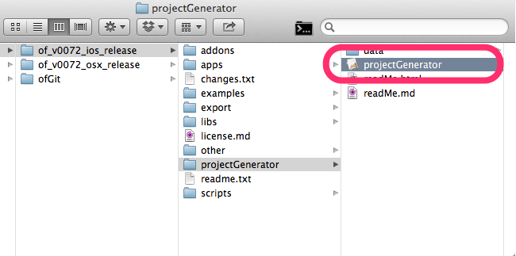
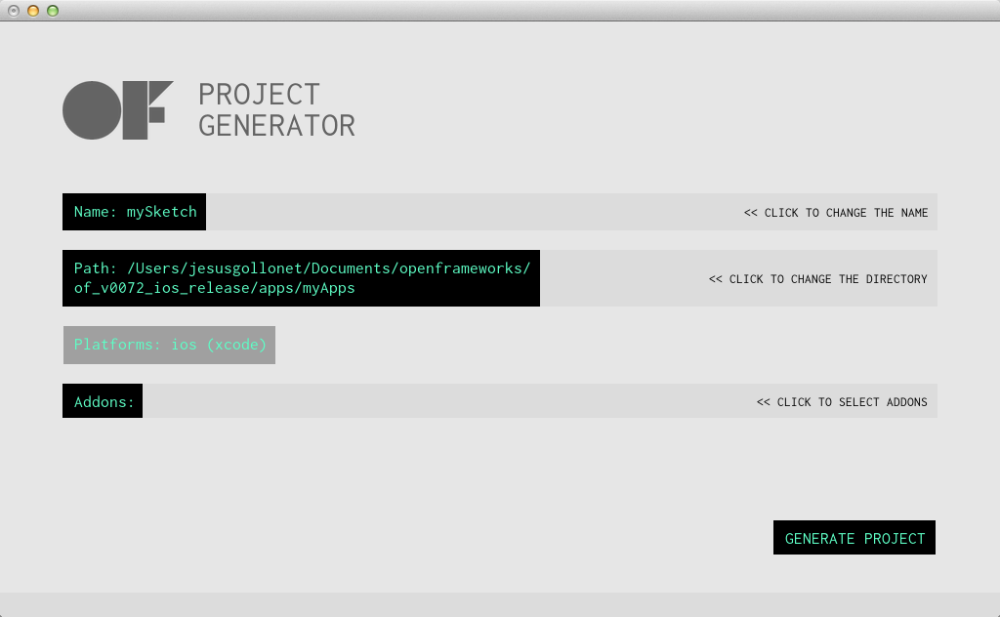
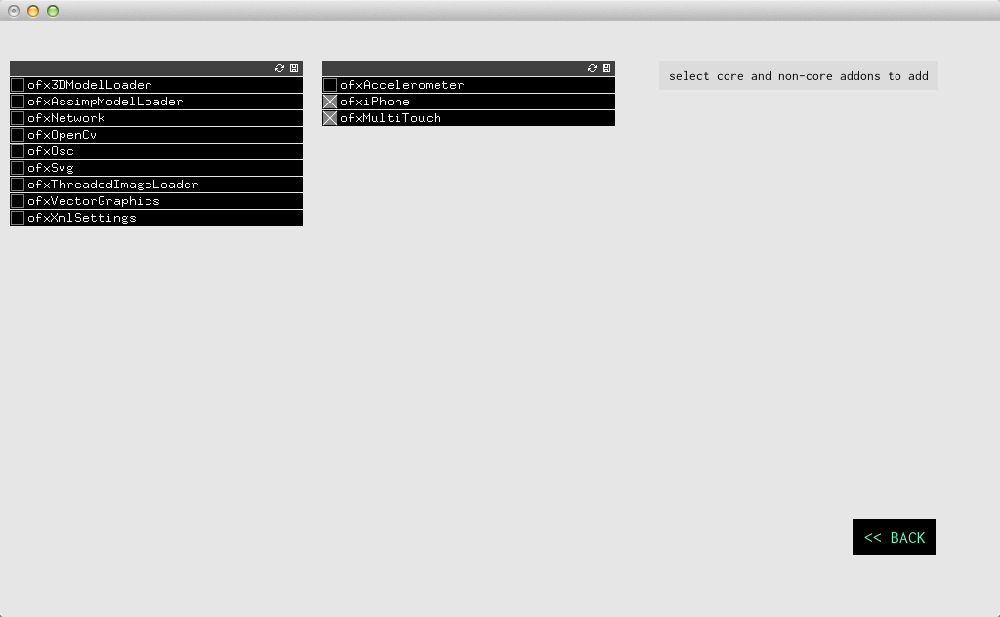

projectGenerator로 새 프로젝트를 생성하세요
1. 이것은 무엇입니까?
openframeworks 0072부터, addon을 포함하여 오픈프레임워크 프로젝트를 생성하는 projectGenerator라는 새로운 툴이 포함됩니다. 이전 버젼에서는, 새로운 oF프로젝트를 만들기 위해선 이미 존재하는 example app과 addon들을 수동으로 복제해야 했습니다. projectGenerator를 사용하면 훨씬 빠르고 에러를 줄일 수 있습니다.
사실, 이 프로그램 역시 openFrameworks로 만들어졌습니다.
2. 사용법
프로젝트 생성은 엄청 쉽습니다. projectGenerator가 포함된 폴더는 oF의 최상 폴더에 위치해 있습니다.

더블클릭하여 실행해주십시오.

새 앱을 생성할 때 설정 가능한 옵션도 있습니다.
1. Name:
프로젝트의 이름을 지정해주세요.
2. Path
projectGenerator를 실행하면, 여기엔 배포판이 위치한 폴더의 절대 경로를 보여줄 것입니다. 대부분 아래와 같을것입니다.
/Users/username/wherever/you/have/openFrameworks/apps/myApps
훌륭한 기본 옵션입니다. 물론 프로젝트를 다른 어떤한 곳에 위치하더라도 상관이 없고, 그렇게 하더라도 당연히 잘 동작합니다. 하지만 오픈프레임웍스 구조상, 경로를 'OF폴더/app'내부에 만들기를 권장합니다. 그렇게 함으로써, OF가 새로 배포되거나, 당신의 프로젝트가 다른 경로로 이동된되거나, 혹은 하부 폴더가 이름이 바뀌더라도 생성된 경로가 깨지지 않습니다.
추천하는 폴더 구조는 아래와 같습니다.
/.../apps/myApps/
/myApp1
/myApp2
...
/.../apps/myBigInstallation
/myProject1
/myProject2
...
/.../apps/myAddonsTests/
/ofxGifEncoderTests
/ofxFlashTests
...
3. Platform
여기엔 여러분이 원하는 빌드하고싶은 플랫폼(운영체제)이 나타납니다. 이부분은 다양한 운영체제 각각의 배포판마다 다르게 나타납니다. 에를 들어 맥킨토시 상의 OSX와 iOS 배포판의 경우, projectGenerator들을 실행하면 그에 상응하는 플랫폼이 보여집니다.
4. Addons
만약 당신이 추가할 addon을 알고 있다면, addon 선택창을 열어서 선택 한 후 다시 돌아가주시면 됩니다. 
Notes on addons
- openFrameworks에 내장된 기본 addon뿐만 아니라, '/addon'폴더에 위치한 모든 addon들이 여기에 보여집니다.
- 모든 addon들 (특히 기본 코어 addon이 아닌)이 이러한 방법들로 추가될 수 있는것은 아닙니다. projectGenerator는 초기에 만들어졌으므로, 아직 테스트 되지 않은 addon들이 많습니다.
- 혹시, 프로젝트를 생성할 때 어떤 addon을 써야할지 모르더라도 괜찮습니다. 프로젝트를 생성 한 이후에도 수동으로 addons을 추가할 수 있습니다.
- openframeworks wiki에 각 플랫폼 별로 addon을 추가하는 방법에 관한 가이드가 있습니다. 어쩌면, 최신버전과 다를수도 있겠지만, 만약 문제에 부딫히면, 주저하지 마시고 forum에 물어보시기 바랍니다.
- addon들은 ofxaddons.com에서 확인하실 수 있습니다.
5. 끝났습니다!
마지막으로 'generate' 버튼을 누르면, 프로젝트파일이 생성됩니다. 추가한 addons에 따라 시간이 좀 걸릴수도 있습니다. 생성이 완료되면 하단의 상태영역에 메시지가 표시될 것입니다.
선택한 경로를 확인해보면, 생성된 프로젝트가 기다리고 있을것입니다. 코딩을 시작하세요.